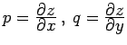

Inhalt Index DeskTop Bronstein

 Integralrechnung Oberflächenintegrale Oberflächenintegrale 1. Art Berechnung des Oberflächenintegrals 1. Art
Integralrechnung Oberflächenintegrale Oberflächenintegrale 1. Art Berechnung des Oberflächenintegrals 1. Art


Ist die Fläche S durch die Gleichung
wobei S' die Projektion von S auf die x,y-Ebene ist und p und q die partiellen Ableitungen  sind. Dabei wird vorausgesetzt, daß jedem Punkt der Fläche S in der x,y-Ebene eindeutig ein Punkt ihrer Projektion S' entspricht, d.h., der Flächenpunkt muß eindeutig durch seine Koordinaten definiert sein. Sollte das nicht der Fall sein, dann wird das Flächenstück S in einige Teilflächenstücke eingeteilt, so daß das Integral über die gesamte Fläche als algebraische Summe der Integrale über die Teilflächenstücke von S dargestellt werden kann. Ist die Fläche in Parameterform gegeben, dann entfällt diese Einschränkung.
Die Gleichung (8.151a) kann auch in der anderen Form
| (8.151b) |
dargestellt werden. Das hängt damit zusammen, daß die Gleichung der Flächennormalen von (8.150) die Form hat, so daß für den Winkel zwischen der Normalenrichtung und der z-Achse die Beziehung besteht. Bei der Berechnung eines Oberflächenintegrals 1. Art faßt man diesen Winkel  als spitzen Winkel auf, so daß immer ist.
als spitzen Winkel auf, so daß immer ist.